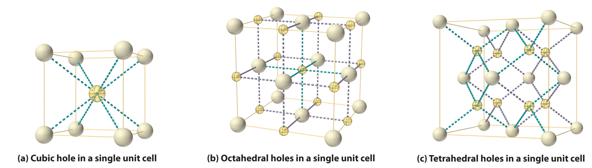
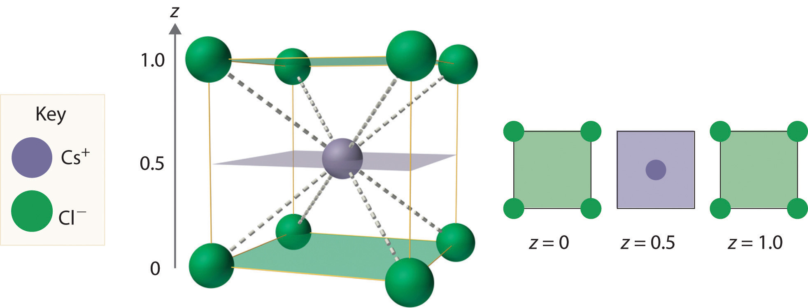
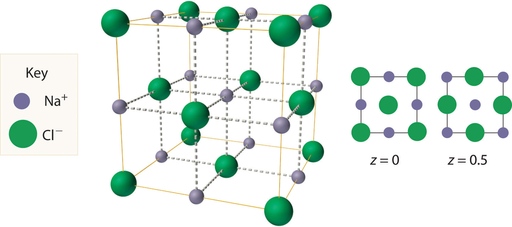
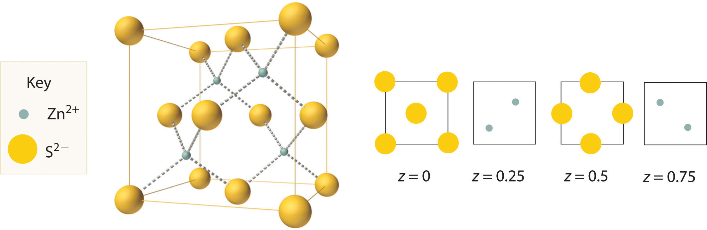
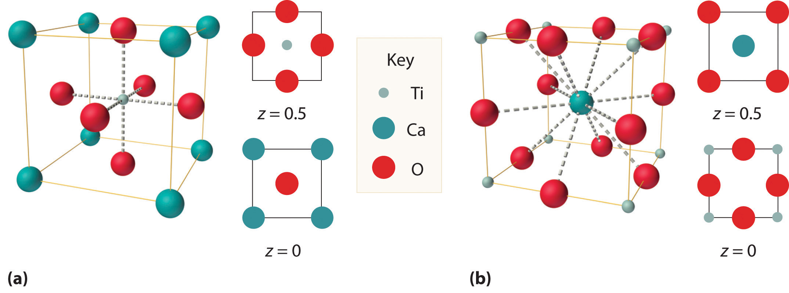
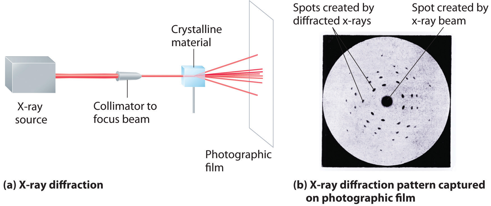
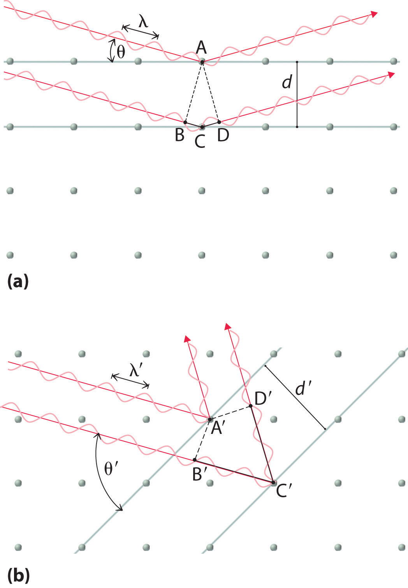

The structures of most binary compounds can be described using the packing schemes we have just discussed for metals. To do so, we generally focus on the arrangement in space of the largest species present. In ionic solids, this generally means the anions, which are usually arranged in a simple cubic, bcc, fcc, or hcp lattice. (For more information about anions, see Chapter 7 "The Periodic Table and Periodic Trends", Section 7.2 "Sizes of Atoms and Ions".) Often, however, the anion lattices are not truly “close packed”; because the cations are large enough to prop them apart somewhat, the anions are not actually in contact with one another. In ionic compounds, the cations usually occupy the “holes” between the anions, thus balancing the negative charge. The ratio of cations to anions within a unit cell is required to achieve electrical neutrality and corresponds to the bulk stoichiometry of the compound.
As shown in part (a) in Figure 12.8 "Holes in Cubic Lattices", a simple cubic lattice of anions contains only one kind of hole, located in the center of the unit cell. Because this hole is equidistant from all eight atoms at the corners of the unit cell, it is called a cubic holeThe hole located at the center of the simple cubic lattice. The hole is equidistant from all eight atoms or ions at the corners of the unit cell. An atom or ion in a cubic hole has a coordination number of 8.. An atom or ion in a cubic hole therefore has a coordination number of 8. Many ionic compounds with relatively large cations and a 1:1 cation:anion ratio have this structure, which is called the cesium chloride structureThe unit cell for many ionic compounds with relatively large cations and a 1:1 cation:anion ratio. (Figure 12.9 "The Cesium Chloride Structure") because CsCl is a common example.Solid-state chemists tend to describe the structures of new compounds in terms of the structure of a well-known reference compound. Hence you will often read statements such as “Compound X possesses the cesium chloride (or sodium chloride, etc.) structure” to describe the structure of compound X. Notice in Figure 12.9 "The Cesium Chloride Structure" that the z = 0 and the z = 1.0 planes are always the same. This is because the z = 1.0 plane of one unit cell becomes the z = 0 plane of the succeeding one. The unit cell in CsCl contains a single Cs+ ion as well as ion, for an overall stoichiometry of CsCl. The cesium chloride structure is most common for ionic substances with relatively large cations, in which the ratio of the radius of the cation to the radius of the anion is in the range shown in Table 12.2 "Relationship between the Cation:Anion Radius Ratio and the Site Occupied by the Cations".
Figure 12.8 Holes in Cubic Lattices
The three illustrations show (a) the cubic hole that is in the center of a simple cubic lattice of anions, (b) the locations of the octahedral holes in a face-centered cubic lattice of anions, and (c) the locations of the tetrahedral holes in a face-centered cubic lattice of anions.
Figure 12.9 The Cesium Chloride Structure
The Cs+ ion occupies the cubic hole in the center of a cube of Cl− ions. The drawings at the right are horizontal cross-sections through the unit cell at the bottom (z = 0) and halfway between the bottom and top (z = 0.5). A top cross-section (z = 1) is identical to z = 0. Such cross-sections often help us visualize the arrangement of atoms or ions in the unit cell more easily.
Table 12.2 Relationship between the Cation:Anion Radius Ratio and the Site Occupied by the Cations
| Approximate Range of Cation:Anion Radius Ratio | Hole Occupied by Cation | Cation Coordination Number |
|---|---|---|
| 0.225–0.414 | tetrahedral | 4 |
| 0.414–0.732 | octahedral | 6 |
| 0.732–1.000 | cubic | 8 |
Very large cations occupy cubic holes, cations of intermediate size occupy octahedral holes, and small cations occupy tetrahedral holes in the anion lattice.
In contrast, a face-centered cubic (fcc) array of atoms or anions contains two types of holes: octahedral holesOne of two kinds of holes in a face-centered cubic array of atoms or ions (the other is a tetrahedral hole). One octahedral hole is located in the center of the face-centered cubic unit cell, and there is a shared one in the middle of each edge. An atom or ion in an octahedral hole has a coordination number of 6., one in the center of the unit cell plus a shared one in the middle of each edge (part (b) in Figure 12.8 "Holes in Cubic Lattices"), and tetrahedral holesOne of two kinds of holes in a face-centered cubic array of atoms or ions (the other is an octahedral hole). Tetrahedral holes are located between an atom at a corner and the three atoms at the centers of the adjacent faces of the face-centered cubic unit cell. An atom or ion in a tetrahedral hole has a coordination number of 4., located between an atom at a corner and the three atoms at the centers of the adjacent faces (part (c) in Figure 12.8 "Holes in Cubic Lattices"). As shown in Table 12.2 "Relationship between the Cation:Anion Radius Ratio and the Site Occupied by the Cations", the ratio of the radius of the cation to the radius of the anion is the most important determinant of whether cations occupy the cubic holes in a cubic anion lattice or the octahedral or tetrahedral holes in an fcc lattice of anions. Very large cations occupy cubic holes in a cubic anion lattice, cations of intermediate size tend to occupy the octahedral holes in an fcc anion lattice, and relatively small cations tend to occupy the tetrahedral holes in an fcc anion lattice. In general, larger cations have higher coordination numbers than small cations.
The most common structure based on a fcc lattice is the sodium chloride structureThe solid structure that results when the octahedral holes of an fcc lattice of anions are filled with cations. (Figure 12.10 "The Sodium Chloride Structure"), which contains an fcc array of Cl− ions with Na+ ions in all the octahedral holes. We can understand the sodium chloride structure by recognizing that filling all the octahedral holes in an fcc lattice of Cl− ions with Na+ ions gives a total of 4 Cl− ions (one on each face gives plus one on each corner gives , for a total of 4) and 4 Na+ ions (one on each edge gives plus one in the middle, for a total of 4). The result is an electrically neutral unit cell and a stoichiometry of NaCl. As shown in Figure 12.10 "The Sodium Chloride Structure", the Na+ ions in the sodium chloride structure also form an fcc lattice. The sodium chloride structure is favored for substances with two atoms or ions in a 1:1 ratio and in which the ratio of the radius of the cation to the radius of the anion is between 0.414 and 0.732. It is observed in many compounds, including MgO and TiC.
Figure 12.10 The Sodium Chloride Structure
In NaCl, the Na+ ions occupy the octahedral holes in an fcc lattice of Cl− ions, resulting in an fcc array of Na+ ions as well.
The structure shown in Figure 12.11 "The Zinc Blende Structure" is called the zinc blende structureThe solid structure that results when half of the tetrahedral holes in an fcc lattice of anions are filled with cations with a 1:1 cation:anion ratio and a coordination number of 4., from the common name of the mineral ZnS. It results when the cation in a substance with a 1:1 cation:anion ratio is much smaller than the anion (if the cation:anion radius ratio is less than about 0.414). For example, ZnS contains an fcc lattice of S2− ions, and the cation:anion radius ratio is only about 0.40, so we predict that the cation would occupy either a tetrahedral hole or an octahedral hole. In fact, the relatively small Zn2+ cations occupy the tetrahedral holes in the lattice. If all 8 tetrahedral holes in the unit cell were occupied by Zn2+ ions, however, the unit cell would contain 4 S2− and 8 Zn2+ ions, giving a formula of Zn2S and a net charge of +4 per unit cell. Consequently, the Zn2+ ions occupy every other tetrahedral hole, as shown in Figure 12.11 "The Zinc Blende Structure", giving a total of 4 Zn2+ and 4 S2− ions per unit cell and a formula of ZnS. The zinc blende structure results in a coordination number of 4 for each Zn2+ ion and a tetrahedral arrangement of the four S2− ions around each Zn2+ ion.
Figure 12.11 The Zinc Blende Structure
Zn2+ ions occupy every other tetrahedral hole in the fcc array of S2− ions. Each Zn2+ ion is surrounded by four S2− ions in a tetrahedral arrangement.
Given: lattice, occupancy of tetrahedral holes, and ionic radii
Asked for: stoichiometry and identity
Strategy:
A Use Figure 12.8 "Holes in Cubic Lattices" to determine the number and location of the tetrahedral holes in an fcc unit cell of anions and place a cation in each.
B Determine the total number of cations and anions in the unit cell; their ratio is the stoichiometry of the compound.
C From the stoichiometry, suggest reasonable charges for the cation and the anion. Use the data in Figure 7.9 "Ionic Radii (in Picometers) of the Most Common Oxidation States of the " to identify a cation–anion combination that has a cation:anion radius ratio within a reasonable range.
Solution:
Exercise
If only half the octahedral holes in an fcc lattice of anions are filled by cations, what is the stoichiometry of the resulting compound?
Answer: MX2; an example of such a compound is cadmium chloride (CdCl2), in which the empty cation sites form planes running through the crystal.
We examine only one other structure of the many that are known, the perovskite structureA structure that consists of a bcc array of two metal ions, with one set (M) located at the corners of the cube, and the other set (M′) in the centers of the cube.. Perovskite is the generic name for oxides with two different kinds of metal and have the general formula MM′O3, such as CaTiO3. The structure is a body-centered cubic (bcc) array of two metal ions, with one M (Ca in this case) located at the corners of the cube, and the other M′ (in this case Ti) in the centers of the cube. The oxides are in the centers of the square faces (part (a) in Figure 12.12 "The Perovskite Structure of CaTiO"). The stoichiometry predicted from the unit cell shown in part (a) in Figure 12.12 "The Perovskite Structure of CaTiO" agrees with the general formula; each unit cell contains Ca, 1 Ti, and O atoms. The Ti and Ca atoms have coordination numbers of 6 and 12, respectively. We will return to the perovskite structure when we discuss high-temperature superconductors in Section 12.7 "Superconductors".
Figure 12.12 The Perovskite Structure of CaTiO3
Two equivalent views are shown: (a) a view with the Ti atom at the center and (b) an alternative view with the Ca atom at the center.
As you learned in Chapter 6 "The Structure of Atoms", the wavelengths of x-rays are approximately the same magnitude as the distances between atoms in molecules or ions. Consequently, x-rays are a useful tool for obtaining information about the structures of crystalline substances. In a technique called x-ray diffractionAn technique used to obtain information about the structures of crystalline substances by using x-rays., a beam of x-rays is aimed at a sample of a crystalline material, and the x-rays are diffracted by layers of atoms in the crystalline lattice (part (a) in Figure 12.13 "X-Ray Diffraction"). When the beam strikes photographic film, it produces an x-ray diffraction pattern, which consists of dark spots on a light background (part (b) in Figure 12.13 "X-Ray Diffraction"). In 1912, the German physicist Max von Laue (1879–1960; Nobel Prize in Physics, 1914) predicted that x-rays should be diffracted by crystals, and his prediction was rapidly confirmed. Within a year, two British physicists, William Henry Bragg (1862–1942) and his son, William Lawrence Bragg (1890–1972), had worked out the mathematics that allows x-ray diffraction to be used to measure interatomic distances in crystals. The Braggs shared the Nobel Prize in Physics in 1915, when the son was only 25 years old. Virtually everything we know today about the detailed structures of solids and molecules in solids is due to the x-ray diffraction technique.
Figure 12.13 X-Ray Diffraction
These illustrations show (a) a schematic drawing of x-ray diffraction and (b) the x-ray diffraction pattern of a zinc blende crystalline solid captured on photographic film.
Recall from Chapter 6 "The Structure of Atoms" that two waves that are in phase interfere constructively, thus reinforcing each other and generating a wave with a greater amplitude. In contrast, two waves that are out of phase interfere destructively, effectively canceling each other. When x-rays interact with the components of a crystalline lattice, they are scattered by the electron clouds associated with each atom. As shown in Figure 12.5 "The Three Kinds of Cubic Unit Cell", Figure 12.7 "Close-Packed Structures: hcp and ccp", and Figure 12.8 "Holes in Cubic Lattices", the atoms in crystalline solids are typically arranged in planes. Figure 12.14 "The Reflection of X-Rays from Two Adjacent Planes of Atoms Can Result in Constructive Interference of the X-Rays" illustrates how two adjacent planes of atoms can scatter x-rays in a way that results in constructive interference. If two x-rays that are initially in phase are diffracted by two planes of atoms separated by a distance d, the lower beam travels the extra distance indicated by the lines BC and CD. The angle of incidence, designated as θ, is the angle between the x-ray beam and the planes in the crystal. Because BC = CD = d sin θ, the extra distance that the lower beam in Figure 12.14 "The Reflection of X-Rays from Two Adjacent Planes of Atoms Can Result in Constructive Interference of the X-Rays" must travel compared with the upper beam is 2d sin θ. For these two x-rays to arrive at a detector in phase, the extra distance traveled must be an integral multiple n of the wavelength λ:
Equation 12.1
2d sin θ = nλEquation 12.1 is the Bragg equationThe equation that describes the relationship between two x-ray beams diffracted from different planes of atoms: . The structures of crystalline substances with both small molecules and ions or very large biological molecules, with molecular masses in excess of 100,000 amu, can now be determined accurately and routinely using x-ray diffraction and the Bragg equation. Example 4 illustrates how to use the Bragg equation to calculate the distance between planes of atoms in crystals.
Figure 12.14 The Reflection of X-Rays from Two Adjacent Planes of Atoms Can Result in Constructive Interference of the X-Rays
(a) The x-ray diffracted by the lower layer of atoms must travel a distance that is longer by 2d sin θ than the distance traveled by the x-ray diffracted by the upper layer of atoms. Only if this distance (BC plus CD) equals an integral number of wavelengths of the x-rays (i.e., only if λ = 2d sin θ) will the x-rays arrive at the detector in phase. (b) In a solid, many different sets of planes of atoms can diffract x-rays. Each has a different interplanar distance and therefore diffracts the x-rays at a different angle θ, which produces a characteristic pattern of spots.
X-rays from a copper x-ray tube (λ = 1.54062 Å or 154.062 pm)In x-ray diffraction, the angstrom (Å) is generally used as the unit of wavelength. are diffracted at an angle of 10.89° from a sample of crystalline gold. Assuming that n = 1, what is the distance between the planes that gives rise to this reflection? Give your answer in angstroms and picometers to four significant figures.
Given: wavelength, diffraction angle, and number of wavelengths
Asked for: distance between planes
Strategy:
Substitute the given values into the Bragg equation and solve to obtain the distance between planes.
Solution:
We are given n, θ, and λ and asked to solve for d, so this is a straightforward application of the Bragg equation. For an answer in angstroms, we do not even have to convert units. Solving the Bragg equation for d gives
and substituting values gives
This value corresponds to the edge length of the fcc unit cell of elemental gold.
Exercise
X-rays from a molybdenum x-ray tube (λ = 0.709300 Å) are diffracted at an angle of 7.11° from a sample of metallic iron. Assuming that n = 1, what is the distance between the planes that gives rise to this reflection? Give your answer in angstroms and picometers to three significant figures.
Answer: 2.87 Å or 287 pm (corresponding to the edge length of the bcc unit cell of elemental iron)
The structures of most binary compounds are dictated by the packing arrangement of the largest species present (the anions), with the smaller species (the cations) occupying appropriately sized holes in the anion lattice. A simple cubic lattice of anions contains a single cubic hole in the center of the unit cell. Placing a cation in the cubic hole results in the cesium chloride structure, with a 1:1 cation:anion ratio and a coordination number of 8 for both the cation and the anion. An fcc array of atoms or ions contains both octahedral holes and tetrahedral holes. If the octahedral holes in an fcc lattice of anions are filled with cations, the result is a sodium chloride structure. It also has a 1:1 cation:anion ratio, and each ion has a coordination number of 6. Occupation of half the tetrahedral holes by cations results in the zinc blende structure, with a 1:1 cation:anion ratio and a coordination number of 4 for the cations. More complex structures are possible if there are more than two kinds of atoms in a solid. One example is the perovskite structure, in which the two metal ions form an alternating bcc array with the anions in the centers of the square faces. Because the wavelength of x-ray radiation is comparable to the interatomic distances in most solids, x-ray diffraction can be used to provide information about the structures of crystalline solids. X-rays diffracted from different planes of atoms in a solid reinforce one another if they are in phase, which occurs only if the extra distance they travel corresponds to an integral number of wavelengths. This relationship is described by the Bragg equation: 2d sin θ = nλ.
Using circles or spheres, sketch a unit cell containing an octahedral hole. Which of the basic structural types possess octahedral holes? If an ion were placed in an octahedral hole, what would its coordination number be?
Using circles or spheres, sketch a unit cell containing a tetrahedral hole. Which of the basic structural types possess tetrahedral holes? If an ion were placed in a tetrahedral hole, what would its coordination number be?
How many octahedral holes are there in each unit cell of the sodium chloride structure? Potassium fluoride contains an fcc lattice of F− ions that is identical to the arrangement of Cl− ions in the sodium chloride structure. Do you expect K+ ions to occupy the tetrahedral or octahedral holes in the fcc lattice of F− ions?
The unit cell of cesium chloride consists of a cubic array of chloride ions with a cesium ion in the center. Why then is cesium chloride described as having a simple cubic structure rather than a bcc structure? The unit cell of iron also consists of a cubic array of iron atoms with an iron atom in the center of the cube. Is this a bcc or a simple cubic unit cell? Explain your answer.
Why are x-rays used to determine the structure of crystalline materials? Could gamma rays also be used to determine crystalline structures? Why or why not?
X-rays are higher in energy than most other forms of electromagnetic radiation, including visible light. Why can’t you use visible light to determine the structure of a crystalline material?
When x-rays interact with the atoms in a crystal lattice, what relationship between the distances between planes of atoms in the crystal structure and the wavelength of the x-rays results in the scattered x-rays being exactly in phase with one another? What difference in structure between amorphous materials and crystalline materials makes it difficult to determine the structures of amorphous materials by x-ray diffraction?
It is possible to use different x-ray sources to generate x-rays with different wavelengths. Use the Bragg equation to predict how the diffraction angle would change if a molybdenum x-ray source (x-ray wavelength = 70.93 pm) were used instead of a copper source (x-ray wavelength = 154.1 pm).
Based on the Bragg equation, if crystal A has larger spacing in its diffraction pattern than crystal B, what conclusion can you draw about the spacing between layers of atoms in A compared with B?
Thallium bromide crystallizes in the cesium chloride structure. This bcc structure contains a Tl+ ion in the center of the cube with Br− ions at the corners. Sketch an alternative unit cell for this compound.
Potassium fluoride has a lattice identical to that of sodium chloride. The potassium ions occupy octahedral holes in an fcc lattice of fluoride ions. Propose an alternative unit cell that can also represent the structure of KF.
Calcium fluoride is used to fluoridate drinking water to promote dental health. Crystalline CaF2 (d = 3.1805 g/cm3) has a structure in which calcium ions are located at each corner and the middle of each edge of the unit cell, which contains eight fluoride ions per unit cell. The length of the edge of this unit cell is 5.463 Å. Use this information to determine Avogadro’s number.
Zinc and oxygen form a compound that is used as both a semiconductor and a paint pigment. This compound has the following structure:
What is the empirical formula of this compound?
Here are two representations of the perovskite structure:
Are they identical? What is the empirical formula corresponding to each representation?
The salt MX2 has a cubic close-packed (ccp) structure in which all the tetrahedral holes are filled by anions. What is the coordination number of M? of X?
A compound has a structure based on simple cubic packing of the anions, and the cations occupy half of the cubic holes. What is the empirical formula of this compound? What is the coordination number of the cation?
Barium and fluoride form a compound that crystallizes in the fluorite structure, in which the fluoride ions occupy all the tetrahedral holes in a ccp array of barium ions. This particular compound is used in embalming fluid. What is its empirical formula?
Cadmium chloride is used in paints as a yellow pigment. Is the following structure consistent with an empirical formula of CdCl2? If not, what is the empirical formula of the structure shown?
Use the information in the following table to decide whether the cation will occupy a tetrahedral hole, an octahedral hole, or a cubic hole in each case.
| Cation Radius (pm) | Anion Radius (pm) |
|---|---|
| 78.0 | 132 |
| 165 | 133 |
| 81 | 174 |
Calculate the angle of diffraction when x-rays from a copper tube (λ = 154 pm) are diffracted by planes of atoms parallel to the faces of the cubic unit cell for Mg (260 pm), Zn (247 pm), and Ni (216 pm). The length on one edge of the unit cell is given in parentheses; assume first-order diffraction (n = 1).
If x-rays from a copper target (λ = 154 pm) are scattered at an angle of 17.23° by a sample of Mg, what is the distance (in picometers) between the planes responsible for this diffraction? How does this distance compare with that in a sample of Ni for which θ = 20.88°?
d = 3.1805 g/cm3; Avogadro’s number = 6.023 × 1023 mol−1
Both have same stoichiometry, CaTiO3
Stoichiometry is MX2; coordination number of cations is 8
No, the structure shown has an empirical formula of Cd3Cl8.
Mg: 17.2°, Zn: 18.2°, Ni: 20.9°